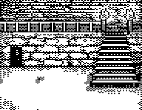
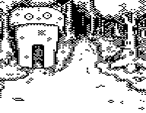
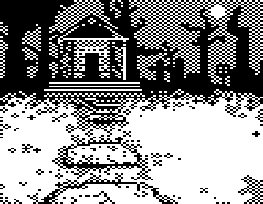
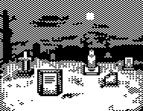

In the last couple days I’ve been cleaning up the content pipeline for Castle Rex. I’m still refining the content creation process, but I’ve made huge steps by moving the pixelling from native Vic-20 tools (notably the excellent MINIPAINT by Mike) to Photoshop. Images are two-color (black and white), and I use 1.5 pixel aspect ratio to match that of the NTSC Vic-20. The export tools I’ve made do support transparency, so sprites are made in the same fashion with the addition of transparency. There’s some work left to do to simplify things like hotspots for room pictures, but just using modern tools has been a big improvement. I exported all existing pictures I’ve made (some examples below) to PNG to allow them to be integrated with future data.
   In the process of writing the export tools, I also arrived at (hopefully) the final format for room data. Rooms in Castle Rex contain all non-engine related data. They are the only things that get loaded at runtime and each contains all text, sprites, and code needed for gameplay on a given screen.
Each room in Castle Rex is stored as one SEQ file on disk. Magnetically, blocks of the SEQ format are extremely simple: each block stores a 2 byte pointer (track and sector) to the next block and 254 bytes of data. The files are loaded into a spare area of memory, which the loader scans to set up tables for important data. For no important reason, the data is loaded byte-by-byte. The original motivation for this was to load the picture data directly to the bitmap (instead of to an intermediate buffer), but, solely for the ability to do fun lil screen-to-screen transitions, we need to store a backup of the entire picture buffer anyway. So instead the entire file is simply loaded to the address $2000, which is right above the bitmap ($1100-$2000).
The first chunk of data in the file is the bitmap. It’s stored, row-major, as 12 columns of 112 rows. Bitmaps are all monochrome (1 bit-per-pixel), so no color data is stored.
Following the bitmap are 6 length-prefixed strings for the filenames of each possible exit from the room (the cardinal directions, up, and down). Length prefixed strings were more common in the olden days, but rarely seen today. For all their tradeoffs (they’re much more difficult to manipulate/slice/etc), they offer only one main benefit: an O(1) length calculation. That and very slightly faster iteration. Frankly, it makes little difference here. Most of the engine deals with standard 0-terminated strings, but CBM DOS works with length-prefixed strings. Since all we do with these strings is send them straight to the drive, it makes sense to use them here.
Following the exit filenames, we store 2 more strings (this time 0-terminated): the name of the room and the description. Following the strings are “hotspots” to handle user interaction with points of interest on the screen. These are stored as a linked-list (a pattern that much of the rest of the file’s data uses). Each hotspot contains a bounding box (x,y,w,h) followed by the binary handler that is executed upon interaction.
Next we store the “things” in the room. Things themselves are a combination of several pieces of data. Much like rooms, they store picture data, a name, a description, and a binary handler. The picture data (actually sprite data) is slightly more complex than the rooms’. It begins with a header containing the width, height and position of the sprite, following that, in addition to a 1bpp bitmap, there is a 1bpp alpha mask that tells us whether to render 0’s in the bitmap as white or transparent. After that, we store three pointers. One to the following “thing” and one to each of two binary functions that follow. These contain, respectively, a “setup” function, which is executed upon load, and a “use” function that is executed when the sprite is clicked by the player.
The “things” objects are terminated by a 0 word ($0000), and following that is, lastly, an optional handler that is executed when the room loads.
And that’s it! That’s the format as it stands today. Hope you enjoyed learning more about the files of Castle Rex. B^)